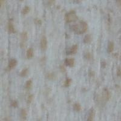
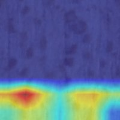
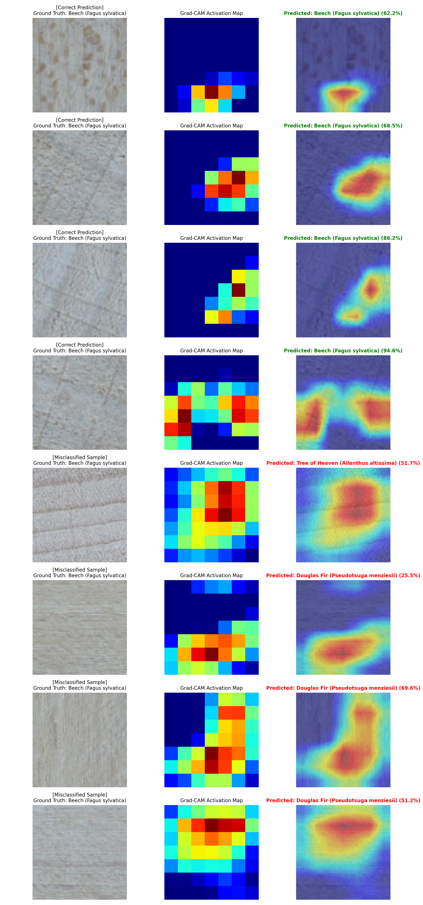
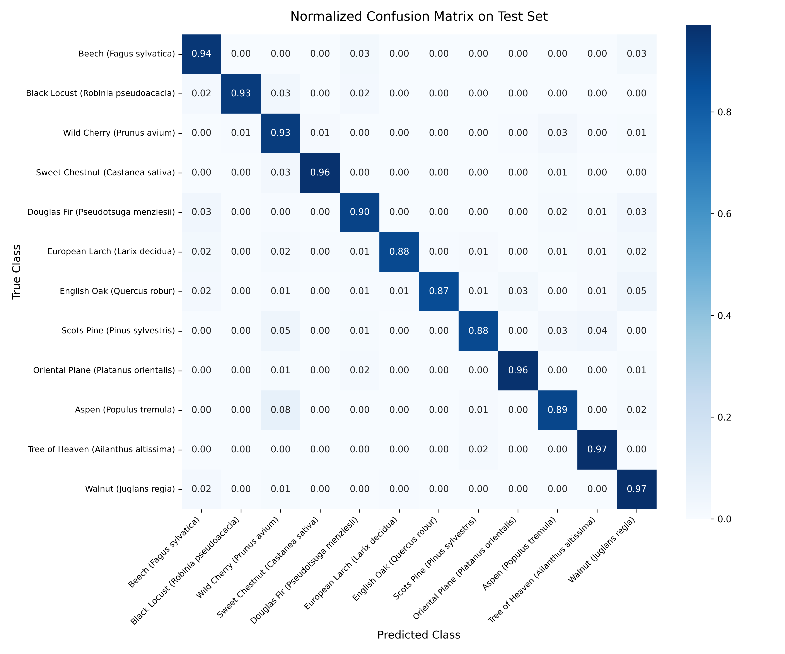
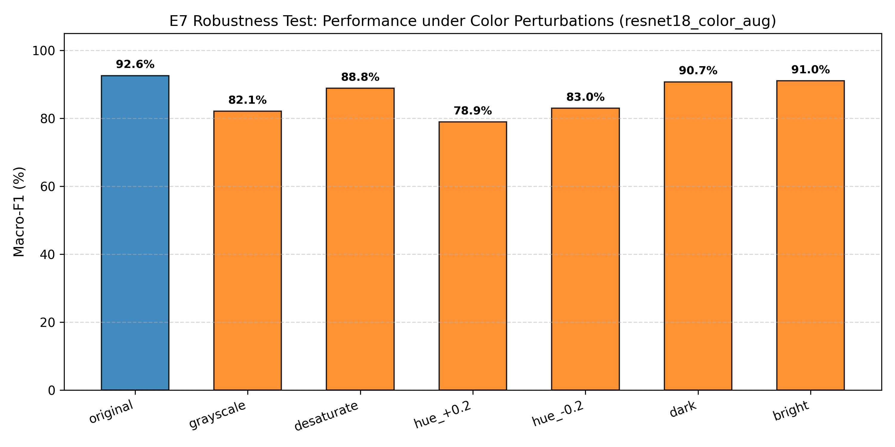
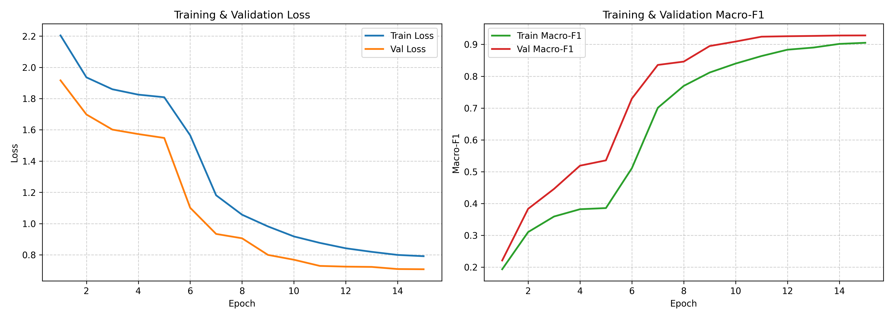

Phân Loại Loài Gỗ &
Đánh Giá Đồng Thời 4 Mô Hình
Hệ thống tích hợp quy trình chạy song song đồng thời 4 mô hình: ResNet-18, Baseline LBP + GLCM + SVM, ResNet-50, và ConvNeXt-Tiny trên cùng một mẫu ảnh thớ gỗ để so sánh độ chính xác và khả năng nhận diện.
Nhận Diện Đồng Thời Trên Cùng Mẫu Ảnh
Chọn một mẫu gỗ từ tập kiểm thử hoặc tải lên ảnh chụp cận cảnh của bạn. Cả 4 mô hình sẽ tiến hành phân tích độc lập và hiển thị kết quả đối sánh song song.


Gỗ Dẻ Gai Châu Âu
Fagus sylvatica (European Beech)
Chưa có ảnh nào được tải lên
Vui lòng chọn hoặc kéo thả một bức ảnh thớ gỗ từ máy tính để cả 4 mô hình cùng nhận diện song song.
Giải Thích Quyết Định Bằng Grad-CAM
Mô hình ResNet-18 đã học được những đặc trưng sinh học nào? Grad-CAM trên lớp layer4 chiếu sáng chính xác các tia gỗ (medullary rays) và mạch gỗ (vessels).

Trực Quan Hóa Grad-CAM Trên 8 Mẫu Thử Nghiệm Đại Diện
Hàng trên hiển thị các mẫu phân loại chính xác: vùng đỏ tập trung dọc theo các tia gỗ phản quang (Gỗ Ti trăn, Sồi) và ranh giới sinh trưởng mùa xuân/thu (Gỗ Thông Douglas). Hàng dưới minh họa các trường hợp nhầm lẫn giữa các loài có cấu trúc vi mô tương đồng cao (Dẻ gai vs Sồi khi thiếu tia gỗ).
Bảng Đối Chuẩn Toàn Diện Các Mô Hình
Đánh giá thực nghiệm khách quan trên 2.836 ảnh Test độc lập không rò rỉ dữ liệu (Stratified Non-leaking Split).

Ma Trận Nhầm Lẫn (Confusion Matrix - 12 Loài)
Đường chéo chính chiếm đa số tuyệt đối với độ chính xác trung bình 92.74%. Hầu hết các loài thông (Scots Pine, Douglas Fir, Larch) đạt độ nhạy trên 95%.

Kiểm Thử Độ Bền Vững Màu Sắc (Color Shift Robustness)
Đánh giá tính bền bỉ trước 7 điều kiện ánh sáng môi trường thực tế (Grayscale, Desaturate, Hue ±0.2, Dark, Bright). Mô hình duy trì F1 > 78% ngay cả khi lệch màu mạnh.

Đường Cong Học Hai Giai Đoạn (Two-Stage Training)
Giai đoạn 1 (Warm-up 5 epochs, đóng băng backbone) giúp hội tụ đầu phân loại ổn định. Giai đoạn 2 (Fine-tuning 10 epochs với lr thấp) tối ưu hóa toàn diện biểu diễn thớ gỗ.
| Tên Mô Hình | Chiến Lược Huấn Luyện | Độ Chính Xác (Accuracy) | Macro-F1 Score | Độ Trễ CPU | Đặc Điểm & Nhận Xét |
|---|---|---|---|---|---|
| Baseline LBP + GLCM + SVM | Trích xuất 64 chiều texture + RBF Kernel | 80.99% | 78.92% | 0.36 ms/ảnh | Tốc độ rất nhanh nhưng F1 thấp hơn -13.65% do đặc trưng thủ công dễ bão hòa. |
| ResNet-18 (Giai đoạn 1) | Chỉ tinh chỉnh Head, đóng băng ImageNet | 86.10% | 85.40% | 14.73 ms/ảnh | Trọng số ImageNet ban đầu chỉ nhận diện vật thể thông thường, cần fine-tune để học cấu trúc vi mô. |
| ResNet-18 (Mô Hình Đề Xuất) | Two-Stage + Color Augmentation | 92.74% | 92.57% | 14.73 ms/ảnh | Điểm tối ưu Pareto: Độ chính xác cao, kích thước nhẹ (43 MB), tốc độ thời gian thực trên CPU. |
| ResNet-50 | Two-Stage + Color Augmentation | 93.41% | 93.15% | 32.40 ms/ảnh | F1 tăng nhẹ +0.58% nhưng độ trễ CPU tăng hơn 2.2 lần (32.4 ms so với 14.7 ms). |
| ConvNeXt-Tiny | Depthwise Sep Conv + 7x7 Kernels | 93.85% | 93.52% | 38.10 ms/ảnh | Độ chính xác cao nhất (+0.95% F1) nhưng mô hình nặng và độ trễ CPU cao hơn 2.6 lần. |